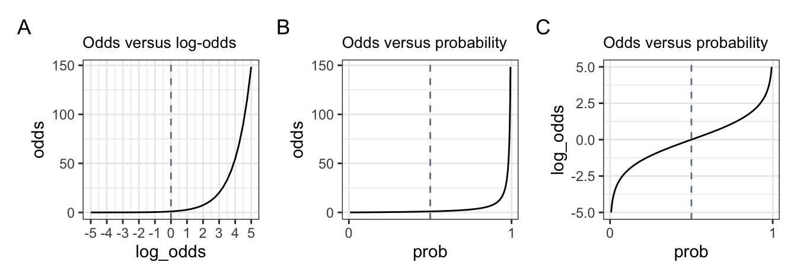
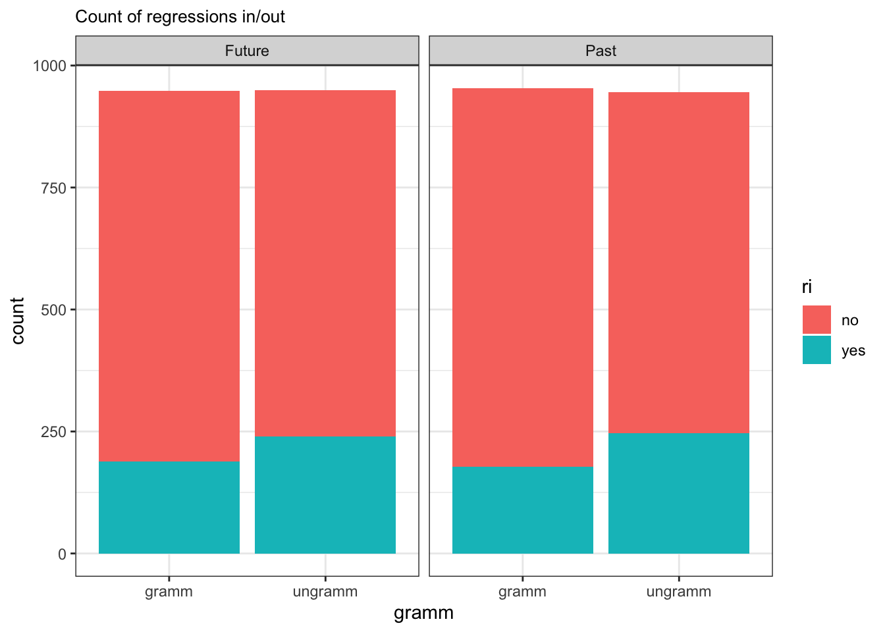
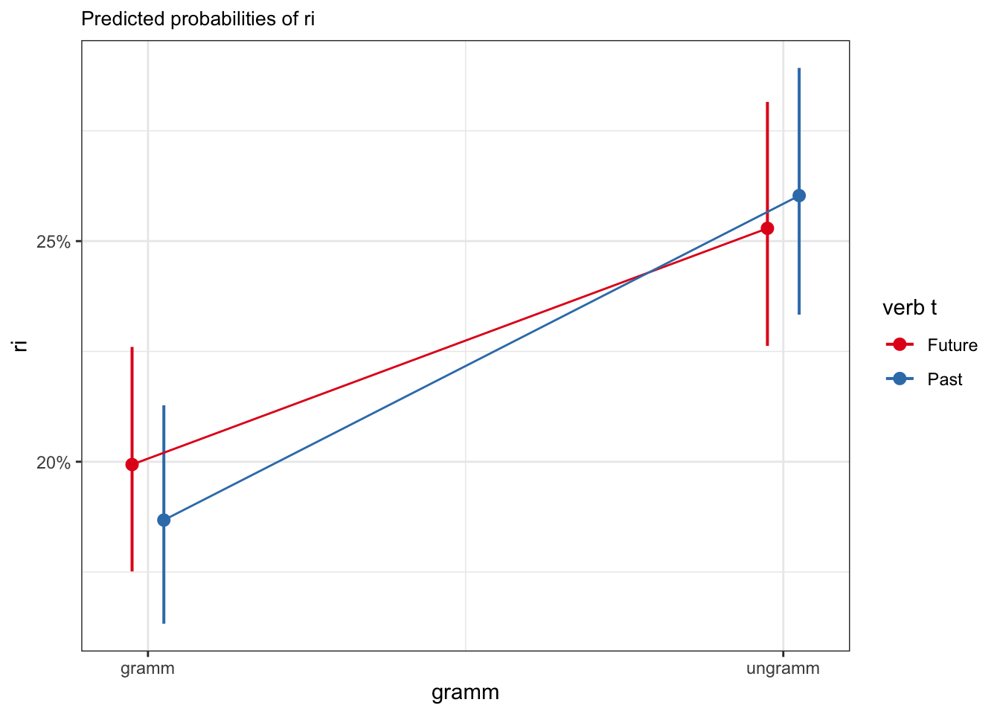
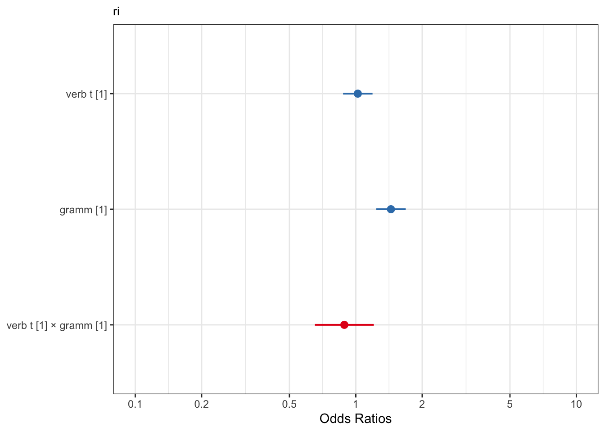
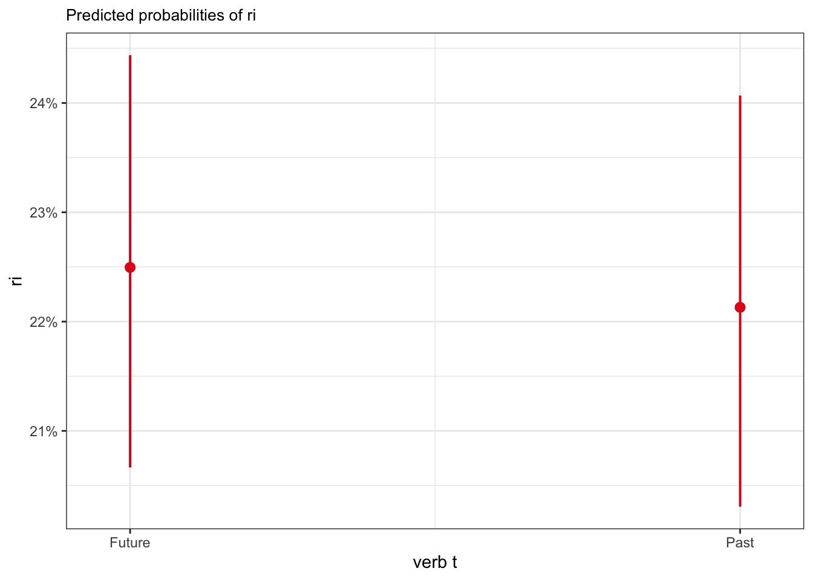
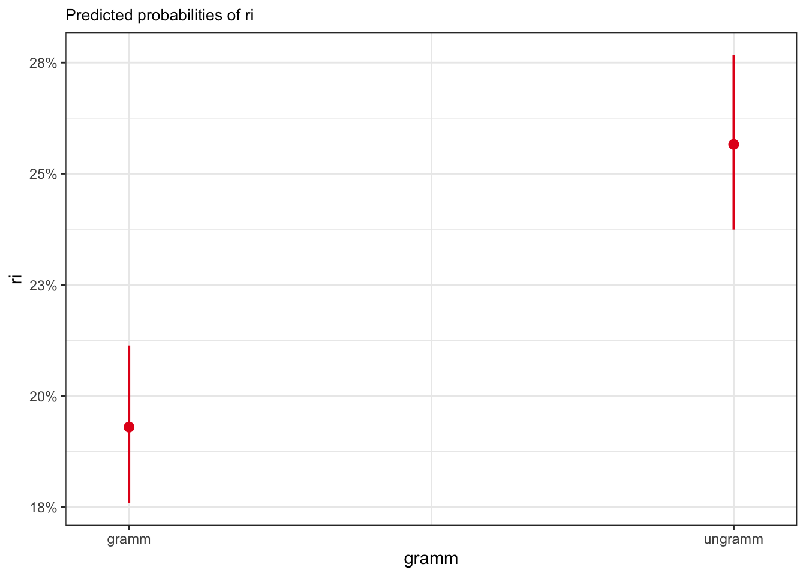
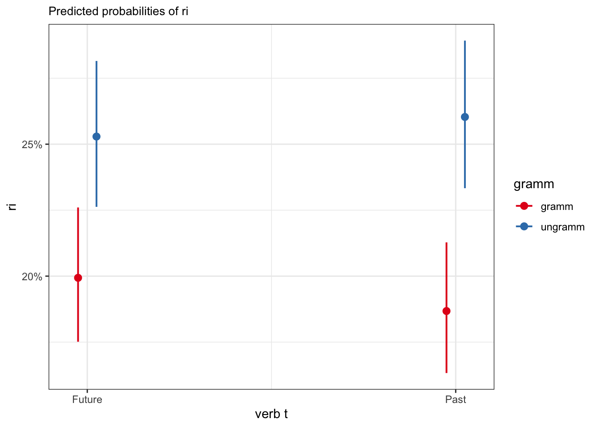

# suppress scientific notation
options(scipen=999)
options(pillar.sigfig = 5)6 Logistic regression
Regression for Linguists
This lecture jumps to chapter 12 'Genearlised Lienar Models 1: Logistic Regression’ (Winter, 2019). We’re skipping a few chapters, which I encourage you to go through on your own. However, they cover topics that you presumably have covered in previous courses (namely significance testing, t-values and p-values).
Learning Objectives
Today we will learn…
- how to model binomial data with logistic regression
- how to interpret log-odds and odds ratio
Set-up environment
library(broman)
# function to format p-values
format_pval <- function(x){
if (x < .001) return(paste('<', '.001'))
if (x < .01) return(paste('<', '.01'))
if (x < .05) return(paste('<', '.05'))
paste('=', myround(x, 3)) # if above .05, print p-value to 3 decimalp points
}We’ll also need to load in our required packages. Hopefully you’ve already install the required packages (if not, go to Chapter 3).
# load libraries
pacman::p_load(
tidyverse,
here,
broom,
lme4,
janitor,
languageR)# set preferred ggplot2 theme
theme_set(theme_bw() + theme(plot.title = element_text(size = 10)))6.1 Generalised linear models
Logistic regression is a type of genearlised linear model (GLM), and is used to model binomial response data. Whereas continuous response variables, such as reaction times, assume a normal distribution (a.k.a., a Gaussian distribution), logistic regression assumes a binomial distribution (a.k.a., Bernoulli distribution). These are formalised in equations \(\ref{eq-normal}\), where \(\mu\) and \(\sigma\) correspond to the mean and standard deviation, and \(\ref{eq-binomial}\), where \(N\) and \(p\) refer to the number of trials and the probability of \(y\) being \(1\) or \(0\).
\[\begin{align} y &\sim Normal(\mu,\sigma) \label{eq-normal} \\ y &\sim binomial(N = 1, p) \label{eq-binomial} \end{align}\]
Don’t stress about this for now, I find the math behind everything will start to make more sense the more often you see it. However, some math is necessary in order to understand the output of our models, namely the relation between probabilities, odds, and log odds.
6.1.1 Log-odds, odds ratio, and probabilities
In logistic regression, we the probability (\(p\)) of observing one outcome or another as a function of a predictor variable. In linguistic research, these outcomes could be the absence or presence of some phenomenon (pause, schwa, etc.) or button responses (yes/no, accept/reject). In logistic regression, we describe the probability, odds, or log-odds of a particular outcome over another.
Probability is quite intuitive, and ranges from 0 (no chance) to 1 (certain). A 50% chance corresponds to a probability of 0.5. You’re also likely familiar with odds, which can range from 0 to infinity. Odds are often used in betting, such as the odds that I’ll win are 2:1, which corresponds to \(\frac{2}{1} = 2\) in favour of my winning. Conversely, the odds that you’ll win are 1:2, corresponding to \(\frac{1}{2} = 0.5\), meaning it’s less likely that you’ll win compared to you losing. If the odds are even, then: \(\frac{1}{1} = 1\). So, odds of 1 correspond to a probability of 0.5. Log-odds are just the logarithmically-transformed odds: \(log(2) =\) 0.6931472; \(log(0.5) =\) -0.6931472; \(log(1) =\) 0. Probability can also be computed using the odds, as shown in \(\ref{eq-odds}\): \(\frac{2}{1+2} =\) 0.6666667; \(\frac{1}{1+1} =\) 0.5; \(\frac{0.5}{1+0.5} =\) 0.3333333.
We can get the probability from a log odds value using plogis(), which performs the following calculation:
\[\begin{equation} p = \frac{exp(log\;odds)}{1 + exp(log\;odds)} = \frac{odds}{1 + odds} \label{eq-odds} \end{equation}\]
Table 6.1 gives an example of how the three relate to each other. The grey cells are all where chances re 50/50, with increasingly more likely (green) or less likely (red) values/
| name | 1 | 2 | 3 | 4 | 5 | 6 | 7 | 8 | 9 |
|---|---|---|---|---|---|---|---|---|---|
| prob | 0.0066929 | 0.0229774 | 0.0758582 | 0.2227001 | 0.5 | 0.7772999 | 0.9241418 | 0.9770226 | 0.9933071 |
| odds | 0.0067379 | 0.0235177 | 0.0820850 | 0.2865048 | 1.0 | 3.4903430 | 12.1824940 | 42.5210820 | 148.4131591 |
| log_odds | -5.0000000 | -3.7500000 | -2.5000000 | -1.2500000 | 0.0 | 1.2500000 | 2.5000000 | 3.7500000 | 5.0000000 |
This relationship is demonstrated in Figure 6.1. Take your time to really understand these plots, as it will help understand the output of our models.

6.2 Logistic regression
I find the more we talk about the math behind the models before even running a model, the more overwhelmed we become. So, let’s run our first logistic regression and then dissect it to understand it. Most relevant to the output of a logistic regression model is Figure 6.1 C, as the model will output log-odds, and we most likely want to interpret them in terms of probabilities.
We’ll use a dataset from Biondo et al. (2022), an eye-tracking reading study exploring the processing of adverb-tense concord in Spanish past and future tenses. Participants read sentences that began with a temporal adverb (e.g., yesterday/tomorrow), and had a verb marked with the congruent or incongruent tense (past/future). We will look at the measure regression in at the verb region.
Let’s start by loading in the data:
df_tense <-
read_csv(here("data", "Biondo.Soilemezidi.Mancini_dataset_ET.csv"),
locale = locale(encoding = "Latin1") # for special characters in Spanish
) |>
mutate(gramm = ifelse(gramm == "0", "ungramm", "gramm")) |>
clean_names() |>
filter(roi == 4,
adv_type == "Deic")6.2.1 EDA
And conducting a quick EDA: print summaries and plot the response variables.
head(df_tense)# A tibble: 6 × 13
sj item adv_type adv_t verb_t gramm roi label fp gp tt ri
<chr> <dbl> <chr> <chr> <chr> <chr> <dbl> <chr> <dbl> <dbl> <dbl> <dbl>
1 1 54 Deic Past Past gramm 4 enca… 1027 1027 1027 0
2 1 4 Deic Future Future gramm 4 cole… 562 562 1337 1
3 1 62 Deic Past Past gramm 4 esqu… 293 1664 1141 0
4 1 96 Deic Future Past ungramm 4 cons… 713 1963 1868 0
5 1 52 Deic Past Past gramm 4 desa… 890 890 1707 1
6 1 90 Deic Future Past ungramm 4 dece… 962 962 962 0
# ℹ 1 more variable: ro <dbl>Let’s look at only our binomial dependent variables, regression in (ri) and regression out (ro). For each variable, 1 indicates a regression in/out, 0 indicates there was no regression in/out.
df_tense |>
select(roi, ri, ro) |>
summary() roi ri ro
Min. :4 Min. :0.0000 Min. :0.00000
1st Qu.:4 1st Qu.:0.0000 1st Qu.:0.00000
Median :4 Median :0.0000 Median :0.00000
Mean :4 Mean :0.2248 Mean :0.08169
3rd Qu.:4 3rd Qu.:0.0000 3rd Qu.:0.00000
Max. :4 Max. :1.0000 Max. :1.00000
NA's :45 NA's :45 Let’s plot out our dependent variable of interest: regression in.
# make grammaticality a factor
df_tense |>
mutate(gramm = as_factor(gramm)) # A tibble: 3,840 × 13
sj item adv_type adv_t verb_t gramm roi label fp gp tt ri
<chr> <dbl> <chr> <chr> <chr> <fct> <dbl> <chr> <dbl> <dbl> <dbl> <dbl>
1 1 54 Deic Past Past gramm 4 enca… 1027 1027 1027 0
2 1 4 Deic Future Future gramm 4 cole… 562 562 1337 1
3 1 62 Deic Past Past gramm 4 esqu… 293 1664 1141 0
4 1 96 Deic Future Past ungra… 4 cons… 713 1963 1868 0
5 1 52 Deic Past Past gramm 4 desa… 890 890 1707 1
6 1 90 Deic Future Past ungra… 4 dece… 962 962 962 0
7 1 8 Deic Future Future gramm 4 evid… 718 718 718 0
8 1 9 Deic Future Future gramm 4 excu… 1453 1453 1453 0
9 1 56 Deic Past Past gramm 4 equi… 769 769 769 0
10 1 11 Deic Future Future gramm 4 cena… 778 778 778 0
# ℹ 3,830 more rows
# ℹ 1 more variable: ro <dbl>
It looks like there are more regressions in for the grammatical versus ungrammatical conditions in both the future and past tenses. There doesn’t seem to be a large difference between the two tenses in overall regressions in, nor in the effect of grammaticality on the proportion of regressions in. We can also see that it was more likely overall for there to not be a regression in (versus for there to be a regression in).
6.2.2 Model
Now let’s run our model. Verb tense and grammaticality are each two-level factors, so we’ll want to set sum coding for each of them. Let’s set past and grammatical to \(-0.5\), and future and ungrammatical to +0.5.
df_tense$verb_t <- as.factor(df_tense$verb_t)
levels(df_tense$verb_t)[1] "Future" "Past" contrasts(df_tense$verb_t) <- c(+0.5, -0.5)
contrasts(df_tense$verb_t) [,1]
Future 0.5
Past -0.5df_tense$gramm <- as.factor(df_tense$gramm)
levels(df_tense$gramm)[1] "gramm" "ungramm"contrasts(df_tense$gramm) <- c(-0.5, +0.5)
contrasts(df_tense$gramm) [,1]
gramm -0.5
ungramm 0.5Now that we’ve set our contrasts (if you have continuous predictors, you would centre and potentially standardise them instead), we can fit our model. We use the glm() function to fit a genearlised linear model, and use the argument family = "binomial" to indicate our data are binomial.
fit_tense_ri <-
glm(ri ~ verb_t*gramm,
data = df_tense,
family = "binomial")What do our coefficients look like?
tidy(fit_tense_ri) %>%
mutate(p.value = as.numeric(p.value)) |>
mutate(p.value = round(p.value*4,10)
) |>
knitr::kable() |>
kableExtra::kable_styling()| term | estimate | std.error | statistic | p.value |
|---|---|---|---|---|
| (Intercept) | -1.2472175 | 0.0392027 | -31.8146220 | 0.0000000 |
| verb_t1 | 0.0209637 | 0.0784053 | 0.2673755 | 3.1567201 |
| gramm1 | 0.3668992 | 0.0784053 | 4.6795205 | 0.0000115 |
| verb_t1:gramm1 | -0.1197221 | 0.1568106 | -0.7634823 | 1.7807033 |
Let’s first consider the estimates. The intercept is negative, meaning it is below 0. Verb tense is positive, meaning that there are more regressions in for the future compared to the past, holding grammaticality constant. Grammaticality is positive, meaning that there were more regressions in for the ungrammatical than grammatical conditions. But what does zero mean here? Logistic regression gives the estimates in log-odds. This means that a value of 0 means there is an equal probability of a regression in or out for both conditions (as in (tab-odds?)), i.e., the slope is flat (or not significantly different from 0). How can we convert our log-odds estimates to something more interpretable, like probabilities? Recall the equation in \(\ref{eq-odds}\), which would require a lot of typing. Luckily, we can just use the plogis() function, which takes a log-odds value and spits out the corresponding probability. We can also just use the exp() function to get the odds ratio from the log-odds.
plogis(-1.23) # intercept prob[1] 0.2261814plogis(0.0277) # tense prob[1] 0.5069246exp(-1.23) # intercept odds[1] 0.2922926exp(0.0277) # tense odds[1] 1.028087This is great, but a bit tedious. We can also just feed a tibble column through the plogis() and exp() functions to print a table with the relevant probabilities and odds.
tidy(fit_tense_ri) %>%
mutate(p.value = round(p.value*4,10),
prob = plogis(estimate),
odds = exp(estimate)
) |>
mutate_if(is.numeric, round, 4) |>
knitr::kable() |>
kableExtra::kable_styling()| term | estimate | std.error | statistic | p.value | prob | odds |
|---|---|---|---|---|---|---|
| (Intercept) | -1.2472 | 0.0392 | -31.8146 | 0.0000 | 0.2232 | 0.2873 |
| verb_t1 | 0.0210 | 0.0784 | 0.2674 | 3.1567 | 0.5052 | 1.0212 |
| gramm1 | 0.3669 | 0.0784 | 4.6795 | 0.0000 | 0.5907 | 1.4433 |
| verb_t1:gramm1 | -0.1197 | 0.1568 | -0.7635 | 1.7807 | 0.4701 | 0.8872 |
We see that the odds of the future tense have a regression in versus the past tense is ~1, with the corresponding probability of 0.51. Unsuprisingly, we see this p-value indicates this effect was not significant (p > .05), and the z-value (note: not t-value!) is also low.
z-values
z-values correspond to the estimate divided by the standard error. It’s interpretation is similar to that of the t-value: a z-value of ~2 or higher will likely have a p-value below 0.05.
The interaction term is negative, what does this mean? We can interpret this as indicating that the effect of congruence is different in either level of tense. These effects are often more easily interpreted with a visualisation, e.g., using the plot_model() function from the sjPlot package. This effect is not significant, however.
sjPlot::plot_model(fit_tense_ri,
type = "eff",
terms = c("gramm", "verb_t")) +
geom_line(position = position_dodge(0.1))
We can also use the predict() function to extract the predicted values for each condition. We could just simply print the predicted values (predict(fit_tense_ri)), append the predicted values to the data frame
# make sure dataset is the same length as the model data
df_tense_v <-
df_tense |>
filter(roi == "4") |>
drop_na(ri)
# append model estimates
augment(fit_tense_ri, data = df_tense_v) |>
distinct(verb_t, gramm, .keep_all = T) |>
arrange(verb_t) |>
select(verb_t, gramm, .fitted)# A tibble: 4 × 3
verb_t gramm .fitted
<fct> <fct> <dbl>
1 Future gramm -1.3903
2 Future ungramm -1.0832
3 Past gramm -1.4711
4 Past ungramm -1.0443Or we could create a list of the unique conditions.
df_sim <-
tibble(
verb_t = rep(c('Past', 'Future'), each = 2),
gramm = rep(c('0', '1'), times = 2))
# alternatively, just extract the relevant factor levels from your datafram
df_sim <-
df_tense |>
arrange(verb_t) |>
distinct(verb_t, gramm)
# and add predicted values
df_sim$fit <- num(predict(fit_tense_ri, df_sim), digits = 5)
df_sim# A tibble: 4 × 3
verb_t gramm fit
<fct> <fct> <num:.5!>
1 Future gramm -1.39025
2 Future ungramm -1.08322
3 Past gramm -1.47108
4 Past ungramm -1.04432And now if we look at the predicted log-odds values for the future and past tenses:
df_sim |>
summarise(
mean_tense = mean(fit),
.by = verb_t)# A tibble: 2 × 2
verb_t mean_tense
<fct> <num:.5!>
1 Future -1.23674
2 Past -1.25770What is the difference between these two numbers (in our model summary)?
df_sim |>
summarise(
mean_tense = mean(fit),
.by = gramm)# A tibble: 2 × 2
gramm mean_tense
<fct> <num:.5!>
1 gramm -1.43067
2 ungramm -1.06377What is the difference between these two numbers (in our model summary)?
So, our slopes for verb_t and gramm correspond to the predicted difference between the two levels of each factor.
6.3 Interpreting our coefficients
What do our coefficient estimates reflect, though? Let’s remind ourselves of the rate of regressions in at the verb region:
df_tense |>
filter(roi == "4") |>
drop_na(ri) |>
summary() sj item adv_type adv_t
Length:3795 Min. : 1.00 Length:3795 Length:3795
Class :character 1st Qu.: 25.00 Class :character Class :character
Mode :character Median : 52.00 Mode :character Mode :character
Mean : 50.91
3rd Qu.: 78.00
Max. :101.00
verb_t gramm roi label fp
Future:1897 gramm :1901 Min. :4 Length:3795 Min. : 81.0
Past :1898 ungramm:1894 1st Qu.:4 Class :character 1st Qu.: 266.0
Median :4 Mode :character Median : 371.0
Mean :4 Mean : 440.5
3rd Qu.:4 3rd Qu.: 535.0
Max. :4 Max. :2833.0
gp tt ri ro
Min. : 87 Min. : 90.0 Min. :0.0000 Min. :0.00000
1st Qu.: 285 1st Qu.: 326.5 1st Qu.:0.0000 1st Qu.:0.00000
Median : 405 Median : 493.0 Median :0.0000 Median :0.00000
Mean : 510 Mean : 607.4 Mean :0.2248 Mean :0.08169
3rd Qu.: 606 3rd Qu.: 747.0 3rd Qu.:0.0000 3rd Qu.:0.00000
Max. :3877 Max. :3936.0 Max. :1.0000 Max. :1.00000 ptab_gramm <-
df_tense |>
filter(roi == "4") |>
drop_na(ri) |>
select(gramm, ri) |>
table() |>
prop.table()
ptab_tense <-
df_tense |>
filter(roi == "4") |>
drop_na(ri) |>
select(verb_t, ri) |>
table() |>
prop.table()
df_tense |>
filter(roi == "4") |>
drop_na(ri) |>
tabyl(gramm, ri, verb_t) |>
adorn_percentages() |>
adorn_totals()$Future
gramm 0 1
gramm 0.8006329 0.1993671
ungramm 0.7471022 0.2528978
Total 1.5477351 0.4522649
$Past
gramm 0 1
gramm 0.8132214 0.1867786
ungramm 0.7396825 0.2603175
Total 1.5529039 0.4470961We want to measure how much more likely a regression in (y = 1) is for ungrammatical conditions (x = 1) than in grammatical conditions (x = 0). Si we want to calculate the odds of a regression in for each case, and take their ratio:
# odds(y = 1 | x = 0)
odds_ri1_gramm0 <-
ptab_gramm[1,2] / ptab_gramm[1,1] # in gramm conditions: ri 0/1
odds_ri1_gramm1 <-
ptab_gramm[2,2] / ptab_gramm[2,1] # in ungramm condiitons: ri 0/1
## odds ratio
odds_ri1_gramm1 / odds_ri1_gramm0[1] 1.442756## log odds
log(odds_ri1_gramm1) - log(odds_ri1_gramm0)[1] 0.3665552# or
log(odds_ri1_gramm1 / odds_ri1_gramm0)[1] 0.3665552## probability
plogis(log(odds_ri1_gramm1 / odds_ri1_gramm0))[1] 0.5906263So the odds of a regression into the verb region is 1.4 times more likely in ungrammatical versus grammatical conditions.
intercept <- tidy(fit_tense_ri)$estimate[1]
tense <- tidy(fit_tense_ri)$estimate[2]
gramm <- tidy(fit_tense_ri)$estimate[3]
interact <- tidy(fit_tense_ri)$estimate[4]What are the log odds for the past (tense = -0.5) grammatical (gramm = -0.5)?
plogis(intercept)[1] 0.2231822plogis(tense)[1] 0.5052407plogis(gramm)[1] 0.5907095plogis(interact)[1] 0.4701052tidy(fit_tense_ri) |>
mutate(prob = plogis(estimate))# A tibble: 4 × 6
term estimate std.error statistic p.value prob
<chr> <dbl> <dbl> <dbl> <dbl> <dbl>
1 (Intercept) -1.2472 0.039203 -31.815 4.0637e-222 0.22318
2 verb_t1 0.020964 0.078405 0.26738 7.8918e- 1 0.50524
3 gramm1 0.36690 0.078405 4.6795 2.8755e- 6 0.59071
4 verb_t1:gramm1 -0.11972 0.15681 -0.76348 4.4518e- 1 0.47011plogis(intercept + tense*-.5 + gramm*-.5)[1] 0.1913675And past ungrammatical (gramm = +0.5)?
plogis(intercept + tense*-.5 + gramm*.5)[1] 0.2545957And for the future conditions?
plogis(intercept + tense*.5 + gramm*-.5)[1] 0.1946325And past ungrammatical (gramm = +0.5)?
plogis(intercept + tense*.5 + gramm*.5)[1] 0.2585946plogis(-1.22521)[1] 0.2270209plogis(-1.22521)[1] 0.2270209\[\begin{align} p &= \frac{odds}{1 + odds} \label{eq1}\\ odds &= \frac{p}{1-p} \label{eq2}\\ log\;odds &= exp(odds) \label{eq3} \end{align}\]
6.4 Visualising model predictions
Something we haven’t really covered is how to visualise our model predictions. So far we’ve only visualised the raw data, but when interpreting model results it helps to see the predictions. This is especially true for logistic regression, because our estimates are given in log odds, which are not very intuitive.
We can use the sjPlot package, which is very handy:
library(sjPlot)
plot_model(fit_tense_ri)
plot_model(fit_tense_ri, type = "eff",
terms = "verb_t")
plot_model(fit_tense_ri, type = "eff",
terms = "gramm")
plot_model(fit_tense_ri, type = "int")
Or we can use the ggeffects package to extract summaries of effects, and then feed them into ggplot2.
library(ggeffects)ggeffect(fit_tense_ri)$verb_t
# Predicted probabilities of ri
verb_t | Predicted | 95% CI
---------------------------------
Future | 0.22 | [0.21, 0.24]
Past | 0.22 | [0.20, 0.24]
$gramm
# Predicted probabilities of ri
gramm | Predicted | 95% CI
----------------------------------
gramm | 0.19 | [0.18, 0.21]
ungramm | 0.26 | [0.24, 0.28]
attr(,"class")
[1] "ggalleffects" "list"
attr(,"model.name")
[1] "fit_tense_ri"ggeffect(fit_tense_ri,
terms = c("gramm", "verb_t"))# Predicted probabilities of ri
# verb_t = Future
gramm | Predicted | 95% CI
----------------------------------
gramm | 0.20 | [0.18, 0.23]
ungramm | 0.25 | [0.23, 0.28]
# verb_t = Past
gramm | Predicted | 95% CI
----------------------------------
gramm | 0.19 | [0.16, 0.21]
ungramm | 0.26 | [0.23, 0.29]6.5 Reporting
Sonderegger (2023) (Section 6.9) says the following:
Reporting a logistic regression model in a write-up is generally similar to reporting a linear regression model…Reporting a logistic regression model in a write-up is generally similar to reporting a linear regression model: the guidelines and rationale in section 4.6 for reporting individual coefficients and the whole model hold, with some adjustments.
We can produce such a table using the papaja package, as in Table 6.2.
library(papaja)
fit_tense_ri |>
apa_print() |>
apa_table(caption = "Model summary for regressions in at the verb region. Estimates are given in log odds.")Table 6.2: ?(caption)
| Predictor | \(b\) | 95% CI | \(z\) | \(p\) |
|---|---|---|---|---|
| Intercept | -1.25 | [-1.32, -1.17] | -31.81 | < .001 |
| Verb t1 | 0.02 | [-0.13, 0.17] | 0.27 | .789 |
| Gramm1 | 0.37 | [0.21, 0.52] | 4.68 | < .001 |
| Verb t1 \(\times\) Gramm1 | -0.12 | [-0.43, 0.19] | -0.76 | .445 |
Or by extracting the model summary with tidy(), and even adding our probabilities, as in Table 6.3.
tidy(fit_tense_ri) |>
mutate(prob = plogis(estimate)) |>
relocate(prob, .after = std.error) |>
apa_table()Table 6.3: ?(caption)
| term | estimate | std.error | prob | statistic | p.value |
|---|---|---|---|---|---|
| (Intercept) | -1.25 | 0.04 | 0.22 | -31.81 | 0.00 |
| verb_t1 | 0.02 | 0.08 | 0.51 | 0.27 | 0.79 |
| gramm1 | 0.37 | 0.08 | 0.59 | 4.68 | 0.00 |
| verb_t1:gramm1 | -0.12 | 0.16 | 0.47 | -0.76 | 0.45 |
6.6 Summary
we saw that the equation for a straight line boils down to its intercept and slope
we fit our first linear model with a categorical predictor
Important terms
| term | description/other terms |
|---|---|
Important terms
| Term | Definition | Equation/Code |
|---|---|---|
| Bernoulli distribution | NA | NA |
| plogis() | NA | NA |
| log odds | NA | NA |
Learning Objectives
Today we learned…
- how to model binomial data with logistic regression
- how to interpret log-odds and odds ratio
Task
6.6.1 Regressions out
Using the same dataset, run a logistic model exploring regressions in (ri) at the adverb region (roi = "2"). Before you run the model, do you have any predictions? Try plotting the regressions in for this region first, and generate some summary tables to get an idea of the distributions of regressions in across conditions.
6.6.2 Dutch verb regularity
Load in the regularity data from the languageR package.
df_reg <-
regularity |>
clean_names()Regular and irregular Dutch verbs and selected lexical and distributional properties.
Our relevant variables will be:
written_frequency: a numeric vector of logarithmically transformed frequencies in written Dutch (as available in the CELEX lexical database).regularity: a factor with levels irregular (1) and regular (0).verb: a factor with the verbs as levels.
Fit a logistic regression model to the data which predicts verb regularity by written frequency. Consider: What type of predictor variable do you have, and what steps should you take before fitting your model?
Print the model coefficients, e.g., using
tidy().Interpret the coefficients, either in log-odds or probabilities. Report your findings.
Session Info
Developed with Quarto using R version 4.3.0 (2023-04-21) (Already Tomorrow) and RStudio version 2023.9.0.463 (Desert Sunflower), and the following packages:
sessionInfo()R version 4.3.0 (2023-04-21)
Platform: aarch64-apple-darwin20 (64-bit)
Running under: macOS Ventura 13.2.1
Matrix products: default
BLAS: /Library/Frameworks/R.framework/Versions/4.3-arm64/Resources/lib/libRblas.0.dylib
LAPACK: /Library/Frameworks/R.framework/Versions/4.3-arm64/Resources/lib/libRlapack.dylib; LAPACK version 3.11.0
locale:
[1] en_US.UTF-8/en_US.UTF-8/en_US.UTF-8/C/en_US.UTF-8/en_US.UTF-8
time zone: Europe/Berlin
tzcode source: internal
attached base packages:
[1] stats graphics grDevices utils datasets methods base
other attached packages:
[1] papaja_0.1.1.9001 tinylabels_0.2.3 ggeffects_1.2.2
[4] sjPlot_2.8.14 gt_0.9.0 googlesheets4_1.1.0
[7] kableExtra_1.3.4 knitr_1.44 patchwork_1.1.3
[10] languageR_1.5.0 janitor_2.2.0 lme4_1.1-33
[13] Matrix_1.5-4 broom_1.0.5 here_1.0.1
[16] lubridate_1.9.2 forcats_1.0.0 stringr_1.5.0
[19] dplyr_1.1.3 purrr_1.0.2 readr_2.1.4
[22] tidyr_1.3.0 tibble_3.2.1 ggplot2_3.4.3
[25] tidyverse_2.0.0 broman_0.80
loaded via a namespace (and not attached):
[1] DBI_1.1.3 sandwich_3.0-2 rlang_1.1.1 magrittr_2.0.3
[5] multcomp_1.4-23 snakecase_0.11.0 compiler_4.3.0 systemfonts_1.0.4
[9] vctrs_0.6.3 rvest_1.0.3 pkgconfig_2.0.3 crayon_1.5.2
[13] fastmap_1.1.1 backports_1.4.1 labeling_0.4.3 effectsize_0.8.3
[17] utf8_1.2.3 rmarkdown_2.22 tzdb_0.4.0 haven_2.5.2
[21] nloptr_2.0.3 bit_4.0.5 xfun_0.39 jsonlite_1.8.7
[25] highr_0.10 sjmisc_2.8.9 parallel_4.3.0 R6_2.5.1
[29] RColorBrewer_1.1-3 stringi_1.7.12 boot_1.3-28.1 cellranger_1.1.0
[33] estimability_1.4.1 Rcpp_1.0.11 modelr_0.1.11 zoo_1.8-12
[37] parameters_0.21.1 pacman_0.5.1 nnet_7.3-18 splines_4.3.0
[41] timechange_0.2.0 tidyselect_1.2.0 effects_4.2-2 rstudioapi_0.14
[45] yaml_2.3.7 codetools_0.2-19 sjlabelled_1.2.0 curl_5.0.1
[49] lattice_0.21-8 withr_2.5.0 bayestestR_0.13.1 coda_0.19-4
[53] evaluate_0.21 survival_3.5-5 survey_4.2-1 xml2_1.3.4
[57] pillar_1.9.0 carData_3.0-5 insight_0.19.3 generics_0.1.3
[61] vroom_1.6.3 rprojroot_2.0.3 hms_1.1.3 munsell_0.5.0
[65] scales_1.2.1 minqa_1.2.5 xtable_1.8-4 glue_1.6.2
[69] emmeans_1.8.6 tools_4.3.0 webshot_0.5.4 fs_1.6.2
[73] mvtnorm_1.2-3 grid_4.3.0 mitools_2.4 datawizard_0.7.1
[77] colorspace_2.1-0 nlme_3.1-162 performance_0.10.4 googledrive_2.1.0
[81] cli_3.6.1 fansi_1.0.4 gargle_1.4.0 viridisLite_0.4.2
[85] svglite_2.1.1 sjstats_0.18.2 gtable_0.3.4 sass_0.4.6
[89] digest_0.6.33 TH.data_1.1-2 htmlwidgets_1.6.2 farver_2.1.1
[93] htmltools_0.5.5 lifecycle_1.0.3 httr_1.4.6 bit64_4.0.5
[97] MASS_7.3-58.4